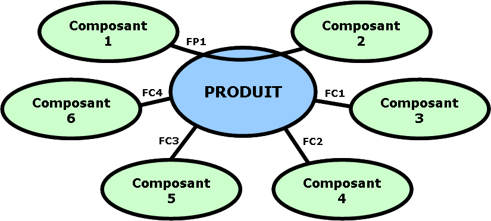

Objectif et principe
Cette méthode est utilisée pour analyser les besoins et identifier les fonctions de service d’un produit.
Pour s’assurer qu’un produit satisfasse les besoins d’un client, on s’occupe des services qu’il rend. Le produit est considéré comme un ensemble fonctionnel, assurant un certain nombre de fonctions, et non pas uniquement comme un assemblage de pièces ou de composants.
Apres avoir isolé un produit, on recense les élément extérieurs à celui-ci.
A qui le produit rend-il service, sur quoi agit-il ?
Pour le graphe général ci-contre, le produit est en relation avec certains composants du milieu extérieur repérés 1 à 6.

- Il créée une ou des relations entre 1 et 2.
- Il doit s’adapter à 3, 4, 5 et il agit sur 6.
Intérêt :
C’est un outil d’analyse, utile pour rédiger le cahier des charges d’un produit lors de sa conception. Il faut caractériser les fonctions : c’est-à-dire, dresser un tableau ou figureront les critères d’appréciation et des niveaux d’évaluation de chacune d’entre elles.
Fonctions Principales FP :
Elles représentent les relations créées par le produit entre deux éléments du milieu extérieur. Il s’agit des fonctions qui justifient la création du produit.
Ex : FP1 : Déplacer l’utilisateur par rapport
à la route sans effort physique.
Fonctions Complémentaires ou Contraintes FC :
Elles représentent les relations entre le milieu extérieur et le produit. Elles adaptent le produit aux éléments du milieu environnant et limitent les libertés du concepteur.
Ex: FC1 : Avoir une autonomie suffisante.
FC2 : Respecter l’environnement.
FC3 : Respecter les autres usagers et se faire respecter d’eux.
FC4 : Transporter des bagages.